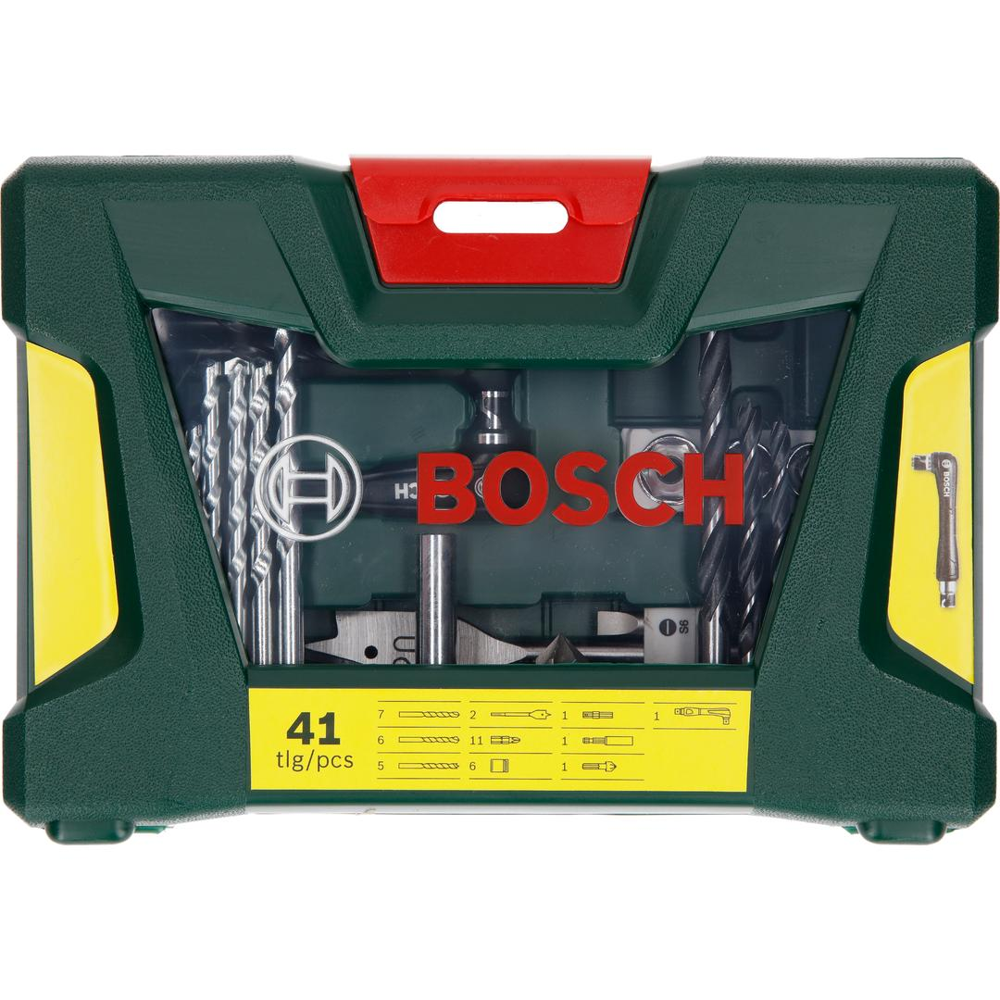
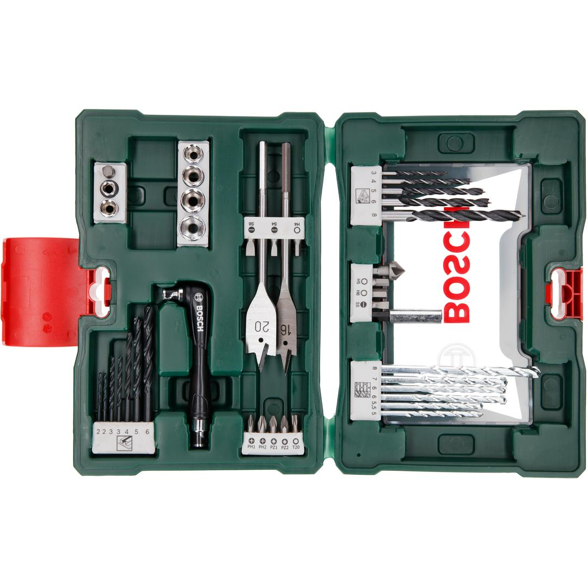

2607017316


| Contents |
1 angle driver
7 HSS-R metal drill bits, Ø 2-6 mm
6 masonry drill bits, Ø 5-8 mm
5 wood drill bits, Ø 3-8 mm
2 spade bits, Ø 16/20 mm
11 screwdriver bits, L = 25 mm
PH 1/2
PZ 1/2
S 4/5/6
T 20
H 4/5/6
6 nutsetters, Ø 6/8/9/10/11/13 mm
1 universal holder, magnetic
1 countersink |
| Packaging |
Plastic case with printed card |
| Dimensions (lxwxh) |
235 x 60 x 162 mm |
| Weight |
0.904 kg |
| Pack quantity |
41 Pcs |
| Minimum order quantity |
1 Pcs |
DIY with Bosch quality: Drilling and screwdriving made easy.